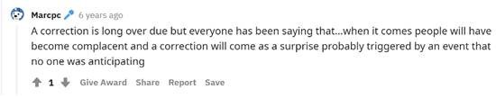

Disclosures and Details
Please read the following information carefully.
This isn't your typical, boilerplate disclaimer. And this document contains two distinct parts.
Part 1: DISCLOSURES ABOUT OUR BUSINESS contains critical information that will help you use our work appropriately and give you a far better understanding of how our business works – both the benefits it might offer you and the inevitable limitations of our products.
Part 2: PROMOTION DETAILS contains facts, figures, explanations, annotations, full testimonials, and other resources about the promotional piece you just viewed. If you have questions or want more information about the marketing material you just viewed, the first place to look is Part 2 of this document.
PART 1: DISCLOSURES ABOUT OUR BUSINESS
The first and most important rule of investing is, in our view, the most obvious:
Investing always involves the risk of loss.
Paradoxically, investing is often most risky when it appears safest. This lesson of history led us to adopt a rather unconventional strategy – a contrarian approach to investing. We believe our approach has great merit, based upon our reading of history of our own track record to date. But as you surely have heard before, the past isn’t necessarily a guide to the future. No matter how well we do our job, no matter how much research we conduct, no matter how promising the opportunity,or certain our analyst… you cannot escape the fact that every investment opportunity (and particularly in stocks) comes with the risk of a loss. These risks are part of the reason why great investment ideas are rare and incredibly valuable.You should understand why a business – like ours – would be willing to share investment ideas with you and under what terms. We’ve prepared this document to help you understand exactly why we publish our best investment ideas (instead of simply investing in them or managing a hedge fund or other investment pool). It will give you insight into the specific conflict of interest we face as publishers and describe how we collect our track records. It will describe our posture in regards to guarantees and refunds. It will explain the regulatory and legal framework that governs how we operate and perhaps most important, it will set the stage for a long and happy business relationship. We’ve been successful in this business for more than 20 years because we’ve always been dedicated to serving our subscribers by only publishing materials we’d want our own families to read and follow, by always being completely transparent about the utility of our products (track records), and by always considering how we’d want to be treated if the roles were reversed. If you’ll take the time to read this document, we believe you will be far more likely to succeed using our materials. You will know more about our approach to serving investors. You’ll know more about the limits of what we can help you achieve. And most of all, you will know a lot more about the risks you inevitably face as an investor.
The first thing to know about our business (Stansberry Research) is that we are NOT money managers, brokers, or fiduciaries of any kind.
Our published work is NOT a low-price replacement for an experienced money manager, broker, or investment advisor. Instead, Stansberry Research LLC is a publishing company and the indicators, strategies, reports, articles, and all other features of our products are provided for informational and educational purposes only. Under no circumstances should you construe anything that appears in our newsletters, reports, or on our website as personalized investment advice. Our recommendations and analysis are based on Securities and Exchange Commission (SEC) filings, current events, interviews, corporate press releases, and what we’ve learned as financial journalists. It may contain errors, and you shouldn’t make any investment decision based solely on what you read here. If you are not an experienced investor, we urge you to get as much education as possible and to consult a licensed individual advisor before making investments of any kind. The regulatory regime for investment advisors and money managers makes it difficult (if not impossible) to serve both the general public and individuals. We have chosen to provide our research to the general public for a number of good reasons. For one, we know that Wall Street has enjoyed a dramatic advantage over the average investor for decades. And we want to level the playing field as much as possible. But the most important reason for serving the general public relates to something called the “prudent man” rule. Historically, the best investment opportunities have arisen amid circumstances most investors believed were risky. For example, opportunities to buy large-cap U.S. stocks at attractive prices have occurred almost exclusively during periods of great economic uncertainty. Recently such opportunities arose in 1987, 1994, 1998, 2002, and 2008. We are confident that such opportunities will occur again. Excessive greed and fear are the emotions that drive the public markets. Likewise, individual securities often trade at the most attractive prices when serious problems arise in a given business. We call these company-specific problems “warts.” However, precisely because most investors are repulsed by such securities, investors willing to study them can produce large investment returns. We seek to take advantage of these opportunities for the benefit of our subscribers. As I’ll explain later, our firm does not own any stocks, nor do we allow our investment analysts to own the stocks they recommend for our subscribers. Investment fiduciaries are often forbidden by regulations – most notably the so-called “prudent man” rule – from taking a contrarian approach like ours with a majority of their investments. These regulations date back to 1830 (though the rules have been significantly revised over the years). The rule boils down to a simple concept: Fiduciaries have an obligation to avoid taking investment risks that are contrary to the public’s opinion. Individual investment managers with fiduciary obligations are legally required “to observe how men of prudence, discretion, and intelligence manage their own affairs.” These rules essentially require registered investment advisors to invest alongside the public. They are forbidden, for example, from shorting stocks. This makes taking a truly contrarian approach nearly impossible because of regulatory and legal liability concerns.
Our company’s primary approach to investing is based in contrarian strategies that may be significantly at odds with conventional wisdom and mainstream approaches to capital management.
That means many of the recommendations and strategies we cover in our publications will seem risky and controversial. It also helps explain why investors and media outlets that follow a more conventional “prudent man” approach frequently criticize our work and even accuse us of malfeasance. We urge you to consider our investment ideas carefully and to follow all of our strategies for risk management, especially position sizing and trailing stop losses. But most of all… we urge you to educate yourself about the philosophy that underlies our approach. If you will take the time to understand why we believe our strategies are likely to work, you can acquire the emotional fortitude and the discipline necessary to successfully apply our strategies. If you lack this understanding, you are very unlikely to succeed.
We are NOT responsible for your results – good or bad. We will NOT take credit (in the form of a percentage of your profits) for your success. Nor are we legally liable for any of your losses.
Subscribing to our newsletters will not make us responsible for your investment results. You will bear the full burden of the risks you decide to take. As we will regularly remind you: It’s your money, and it’s your responsibility. Our lack of fiduciary responsibility might cause you to second-guess our work. That’s fine with us. We urge you to be critical and skeptical of all investment recommendations, no matter the source. But the simple fact is, if we were subject to legal liability for any losses resulting from our recommendations, our business would disappear overnight. No investment manager could withstand the risk of investment losses without also reaping the rewards of investment gains. Being free of these fiduciary obligations allows us the freedom to operate and to provide information about investment strategies (contrarian) and investment ideas that others are not able or willing to cover. Therefore, when you use our services remember to always limit your position sizes to an amount you can easily afford to lose. (We’d recommend the same advice when making an investment based on a recommendation from any source.)
A very important warning: We make mistakes.
We are human. We make mistakes. Sometimes our ideas and hunches turn out to be wrong (though not often, we’re pleased to report). More frequently our “timing” is off. That is, an investment theme we expect to develop only does so in a timeframe that makes it difficult to earn a profit. And of course, there are also times when we are misled, despite reasonable efforts to confirm our sources. Based on the large number of customers we have acquired and retained and based on our own internally kept track records (more on these below), we feel confident that on the whole our work is extremely reliable. We doubt you’ll find work by any other publisher that is as detailed and well-sourced. Nevertheless, it is important for you to realize that no published materials anywhere – not even the New York Times - is regularly published without at least occasional mistakes. When we make mistakes, you can count on us to correct them as quickly and honestly as possible. It is very unlikely (though it does happen from time to time) that you will become wealthy from trading stocks, bonds, options, commodities, or other financial instruments. The most realistic way to become wealthy, in our view, is by building your own business or by playing a key role in the creation or the significant growth of an existing one. Our newsletters are intended to serve people who are in the process of wealth building by helping them manage their savings or people who already have significant amounts of savings earn a higher average return.
Why not simply manage money or keep our ideas for ourselves?
Most knowledgeable investors are willing to share their ideas with other investors in exchange for a fee. Sharing ideas doesn’t reduce returns and can generate substantial amounts of income for good investors. Fees for top-quality money managers are high – especially for investors who are able to pursue contrarian strategies. Hedge funds, for example, typically charge 2% of assets under management and 20% of profits. Fees generated by successful hedge funds can reach into billions of dollars. While we have considered for many years launching such a fund, the regulatory burden and the cost of raising large amounts of capital, are significant. On the other hand, thanks to the First Amendment, there are relatively few legal burdens to publishing and thanks to the Internet, there are few capital constraints. These low barriers to entry allowed us to achieve a significant amount of success very quickly. We reached 100,000 subscribers within five years of operations. Within about 10 years of operations, we’d reached well over a million total readers and more than 500,000 paid subscribers. Thus, in about 10 years, we grew from a start-up (Porter Stansberry wrote our first sales letter on a borrowed laptop computer from his kitchen table) to the world’s leading subscription-based financial publisher (according to various databases of subscriber figures). We know of no other business in our industry that has ever achieved growth equal to even a fraction of these numbers so quickly. We don’t believe such rapid success would have been possible if we’d attempted to build a money-management business. You should know that we attribute our success to three simple factors: our contrarian approach (we cover valuable opportunities others won’t or can’t), the number of very highly skilled analysts we were able to recruit and retain (primarily by offering a work environment that promised lucrative rewards for success with almost no conflicts of interest), and the integrity with which we have always approached our endeavors. Or as our founder likes to say in jest, “All it takes is a decade of hard work to become an overnight success.” Our path to success was set in motion by a simple choice: We decided to publish our investment ideas to millions of people around the world at a relatively low price rather than sharing our ideas exclusively with a very small group of wealthy investors at a high price. In the long term, for this approach to be successful, we must continue to provide large numbers of subscribers with unique, contrarian investment advice that is reliable and profitable.
We have structured our business in an effort to avoid conflicts of interest, but a significant potential conflict of interest still exists.
We believe everyone involved in finance has some conflict of interest. Hedge-fund managers, for example have a tremendous incentive to produce short-term capital gains so that they can generate fee income (20% of gains). This might lead them to take short-term risks at the expense of safer and more lucrative long-term gains. This conflict will exist even if the manager keeps all or most of his wealth inside the fund. It also helps explain why successful hedge-fund managers often end up earning far more from running the fund than their clients make investing in it. We generate our profits exclusively from the subscriptions we sell. This is deliberate. We do not want our subscribers to wonder whether we were recommending a company or an investment because the company or investment sponsor advertised with us. This has been one of the ways that we have steered clear of potential conflicts of interest but it’s not the only one.
We don’t accept compensation (or favors) from the companies we recommend as investments.
As you may know, many newsletter companies do not adhere to the same guidelines that we do. Some accept compensation from the companies whose stock they recommend and cover. We could argue that our policies described above leave us completely free of any conflict of interest. Other financial publishers will surely make such a claim. But it’s not completely true. We have made efforts to structure our business so that we don’t have any conflicts of interest. But despite our efforts, we do have a conflict. It’s a conflict that’s systemic throughout the investment community and complex to explain… so bear with me. The investing public has the unfailing tendency to rush into the worst possible investments at the worst possible time. We call this the “paradox” of finance. People can figure out when it’s a good time to buy groceries – when they’re on sale. But when it comes to securities, people tend to ignore them when they’re cheap and stampede into them when they’re expensive. For example… you’ll remember that in 1999 and 2000 investors all rushed into tech stocks… at the wrong time. Then, they rushed into the housing market… at the wrong time. We believe this irrational behavior is linked to the emotional need many people have to conform. It’s the same psychology, essentially, that powers the fashion business. We can’t say what investment passion will strike the crowd next, but we know, when it occurs, it would prove lucrative for us to publish information confirming the crowd’s passions… even when it involves making bad or dangerous recommendations. That is, during bubble periods, we have a financial incentive to help inflate the bubble because that’s the kind of information the public will demand in those periods. This conflict – the temptation to sell the public the information it wants even if it’s not in their interests – isn’t unique to financial publishers. All forms of media face this conflict. That’s why, at market tops, you will commonly find magazine covers and other types of mainstream media embracing the bubble. We attempt to balance this conflict by focusing on proven contrarian approaches to investing. We further advocate strict risk-management strategies that have so far largely prevented us from being caught up in investment manias. You should also know that the structure of our company and the factors that drive our profits help minimize the financial temptation to “go with the crowd” in the short term. Essentially all of our profits are derived from renewal sales or additional sales to existing customers. We typically market to new customers at a loss. This allows us to reach more potential subscribers and, over time, to build a bigger business. It also means that unless our subscribers choose to renew in large numbers, we are unlikely to succeed at our business. This helps to align our interests with the long-term success of our subscribers. We believe we are unique in this long-term strategy among all financial publishers. Just to be clear, though, no financial business is totally immune to all conflicts of interest – just as no investment is totally free of risk. No matter how dedicated our executives are to the success and wellbeing of our subscribers, at least some of our employees will be motivated by a need to sell, to motivate, to persuade, and to captivate our subscribers to produce revenue for our business. It is difficult to sell anything without embracing, at least somewhat, the mood of the public. Thus, we urge all subscribers to reference our most recent newsletters and to consult with an individual advisor before making any investments. Likewise, we would urge you not to rely – at all – on any of our marketing pieces or sales letters when making your investment decisions. These publications are designed to sell our research products and thus, by design, lack the more fully balanced analysis of the risks and rewards of any particular investment idea that you will find in our newsletters.
We offer one of the most generous refund policies in our industry… and perhaps in the world.
More so than any other business we can name, we believe in “parting as friends.” If we cannot meet your expectations, you should always have the opportunity to call us on the phone, tell us how we’ve failed you, and get your money back. That is why, since the first day of our operations, we have always maintained in-house customer service, hiring bright, and dedicated young people and employing them in our headquarter buildings. They work in the same building as our senior executives and our owners. Whatever the purpose of your call, it will be answered promptly and handled professionally. Our wait times are normally less than one minute. And our average call duration is less than five minutes. We are open for business (on the phone for customer service) from Monday through Friday, 9 a.m. through 5 p.m. Eastern time. Our phone number is: 1-888-261-2693.
Some cynical readers have suggested that we offer such generous refunds because we don’t really believe in (or stand behind) our work. Nothing could be further from the truth. Our guarantees reflect the complete confidence we have in our products. Our goal is to never publish anything our founder wouldn’t want his own parents to read and to follow. Our basic philosophy is that we have to earn your business, which is why we offer you the chance to ask for your money back. This “we haven’t earned it yet” attitude encourages us to continue to do great work for you. But that’s not all we promise. To encourage subscribers to try our products, we further provide complete refunds on virtually all of our entry-level products for periods of up to 30 days (our offers vary). We only pay sales commissions on a post-refund basis. Thus our employees have no financial incentive to mislead anyone. Furthermore, our potential customers are encouraged to try our products with zero financial risk. If we can’t deliver on our promises, they’re entitled to all of their money back on virtually every entry-level product we offer. You can “get to know us” without taking a single penny of risk. In most cases, our investing and trading services also come with a 30-day guarantee as well. We want you to be completely satisfied with your decision. If you’re not, our Baltimore-based customer service team will promptly refund the full amount of your purchase if you call within 30 days. Subscribers may also request a sample issue (containing out-of-date information from a previously published newsletter) from our customer service team to evaluate for themselves, at any time, the value of these products. The policies – offering plenty of no-risk-whatsoever opportunities in conjunction with asking customers to make a small commitment on certain products – provides a reasonable balance between the rights we have as a content provider with valuable information and those of our customers to avoid making a purchase that’s doesn’t match their investing styles or interests. From time to time, we will make offers that don’t include the option to receive a refund. A skeptical reader might suggest that we are trying to trick people into subscribing to a service that isn’t right for them so we can make more money. But the exact opposite is true. We want to limit the sales of that particular offer to only the most serious readers. We want to make sure that the subscribers to these offers intend to subscribe and stick with that particular newsletter. In the past we’ve had people subscribe just to read about the situation we were describing in the marketing offer. They would download all of the information and then call us for a refund. That is unfair to the other subscribers and to us as publishers. Those aren’t the kind of subscribers we are looking for. We want subscribers that understand the value of our work and are committing to being a long-term customer of our business. So, we use the “no refund” offer exclusively for situations where we want to limit the sales to subscribers who are serious about buying the information and remaining subscribers. If a customer buys one of these offers and finds out that they can’t act on the advice our Customer Service team will find a way to apply the money from that purchase to another newsletter via our credit system. We cannot imagine a reasonable person being disappointed in our willingness to provide a refund, a subscription extension, or a credit. Our policy – of always being willing to “part as friends” – has kept our business on the right side of nearly every potential conflict. No matter which one of our products you purchase the terms of the offer are always clearly described on the order form. We strive to make sure every customer understands exactly what they are buying, how much it costs and what their options are if they choose not to keep their subscription. While we know it is impossible to avoid every potential misunderstanding and to make everyone happy all of the time, we’re proud of our ability to consistently please so many of our customers. We have among the industry’s highest renewal rates and, as far as we know, the largest base of lifetime customers. Our company’s most important asset is our reputation for trustworthiness, and maintaining that reputation is our highest goal.
Why our business model is almost exclusively based on subscriptions.
You may have noticed that the vast majority of our products are offered only via subscription. To protect free speech and to encourage public debate and the exchange of ideas, the SEC has carved out what’s known as the “publisher’s exemption” from certain securities laws. This exemption doesn’t mean that we can write whatever we want. It means that we aren’t required to be registered with the SEC. And it means that we can write about things registered advisors would find difficult to get through their compliance departments – such as extremely contrarian advice. To qualify for this exemption from securities licensing (and avoid the “prudent man” restrictions we mentioned earlier), we must be a “bona fide” publisher, which under law is defined as a publisher who offers commentary to the public on a regular schedule via subscription. The SEC frowns on “tip sheets” that sell one-off reports. These policies help create accountability for publishers. If we aren’t able to live up to our promises and the expectations we set, our clients have the right to demand a refund. And that’s why we’ve always had such a liberal and generous refund policy. We have no problem proving our value to subscribers. It’s exactly how we’d want to be treated if our roles were reversed.
Newsletter track records: Why they’re not like mutual funds.
The mutual-fund industry has become, like the wine trade, addicted to extremely simplistic, almost ritualistic, evaluations of quality. A wine is a 96. That’s great. A fund is five-star. That’s great. What’s your newsletter’s rank? The problem is, unlike a mutual fund, newsletter track records have no precise starting point or ending point. The size (number of positions) grows over time, as the letter adds recommendations. Thus, a newsletter can’t really be compared – directly – to either a mutual fund or a stock index. The closest comparison we can manage for newsletters is to give you the average annual return of each recommendation made and the average holding period. This gives you the annualized return – which is an approximation of what you might have earned following the advice of a newsletter. It’s far from precise. It doesn’t account for taxes (if you’re investing in a taxable account) or “slippage” – which is the price you paid when you bought versus the recommended price and the price you got when you sold versus the recommended sell price. We can only track prices that are available in the market at the time we publish. Occasionally, someone will complain that our track records aren’t reliable because they don’t reflect actual investment returns. It’s important for you to realize that your results might be better or worse than the results we represent. We simply have no way to know what your entry price was, what your exit price was, or what taxes you’ve paid (or will eventually pay). We strive to make our track records accurate. They may, or they may not, be representative of your actual results. Now… here’s the problem with track records and the reliance some investors place on them. There’s not a single mutual fund in the world whose long-term track record is great (10 years with double-digit annual returns) that doesn’t also have periods of terrible investment performance. Likewise in the newsletter business, we have some analysts and some strategies that excel during bull markets. Some that excel during bear markets. And some that can produce very consistent (but not world-beating) results. We had an editor, for example, close out 136 winning positions in a row, where the average return on each position was roughly 10%. Of course, he held those positions open for two to three months. So his annualized return over that period was 52%. Nearly all of our products are based on a fundamental approach to securities analysis. A few offer advice based on the market’s technical outlook. We’ve developed a preference for fundamental factors (like the underlying quality of the business and a rational evaluation of the stock’s intrinsic value versus its market price) because we’ve found these qualitative measures to be the most reliable. The most important thing that you need to understand is that no single investment strategy (or investment analyst) can provide consistently market-beating advice at all times and in all markets. Our analysts use a variety of contrarian-based strategies. Our efforts are designed to allow you to use the right tools in the right market conditions. All of our publications maintain a track record. Virtually all of them post their open positions on our website and almost all of them are also printed with each issue. All of the back issues are available on our website. You can see for yourself how each analyst has done with every recommendation he or she has ever made. You can see how each of our products has performed in the past, during various market conditions. All of these things we do to inform our readers about the products that they’ve purchased and represent our efforts to be transparent. Please understand: The best thing an investment research product can bring you is a good idea that’s right for the market conditions and offers an overwhelming potential for success versus a moderate level of risk. No investment newsletter is likely to make you rich overnight, although we’ve seen huge profits in volatile industries, like mining and biotechnology. Most of your success as an investor will be determined by how much capital you have to invest, how much time you have to invest, and your asset allocation, that is, how much of your capital you have in stocks versus bonds and cash. If you want to be successful as an investor, our best advice is to become an expert at avoiding risk. Simply putting your money into high-quality stocks and bonds is very likely your best bet.
Another way we try to avoid conflicts: Our analysts do not buy the stocks they recommend to you.
Our company policy forbids our investment analysts and their staff from owning any stock they recommend. In addition, other employees of Stansberry Research may not purchase recommended securities until 24 hours after the recommendations have been distributed to our subscribers on the Internet. Some subscribers profess to be disappointed that our analysts don’t “eat their own cooking” or have any “skin in the game” since they aren’t allowed to own even a token amount of the stocks they’ve recommended. That opinion is naïve. Nothing is more important to the long-term success of an analyst in our industry than a reputation for producing excellent results for their subscribers. An analyst’s standing in our company and our industry is measured by his or her ability to produce a winning track record using a given strategy. This is real skin in the game – far more skin than simply investing a few thousand dollars in a particular stock. This position also allows our analysts to be genuinely independent. That guarantees us that the only reason they have to recommend a stock, to re-recommend a stock, or to recommend selling a stock is that they fully and sincerely believe that’s the best course of action. Without this independence the possibilities of a conflict of interest are infinite.
PART 2: PROMOTION DETAILS
The following contains facts, figures, explanations, annotations, full testimonials, and other resources about the promotional piece you just viewed.
In short, these are the resources used to put together the previous promotion. As you have seen, we publish testimonials in our promotions. All of those testimonials are the words of real subscribers that we received in real letters, emails, and other feedback. If a subscriber sends a testimonial we’d like to use in a promotion, a member of our Customer Service team calls them to verify their claims. We do not make these results up, and we do not pay or compensate subscribers for their testimonials.
When we receive testimonials from a subscriber, we veil their last name and any identifying details to protect their privacy and identity. During the verification process we’ll often ask for particulars about the subscriber's results, including:
- How much money he or she invested,
- How long he or she was in the trade,
- How much the subscriber made in dollars terms and as a percentage of the original investment, and
- What portion of his or her overall portfolio was put into the trade.
We ask these questions because we want a clearer picture of the results that the subscriber attained so that we can pass that information on to you.
While we ask these questions, we are aware that this financial information is personal and sensitive. Some subscribers do not feel comfortable sharing this information with us, especially knowing that we may publish it. You should keep these questions in mind when assessing whether to purchase our products and whether you could obtain similar results.
If the subscriber does not give us this information, then we cannot publish it.. We publish this information to let you know that these results are possible and have been achieved by real people after reading our research. However, you should also understand that we are advertising these testimonials because they are atypical. These results are examples of the very best possible outcomes.
Past results like these are no guarantee of any future result.
We wouldn't recommend anticipating such outstanding results with your own investments. Yes, you could have results like these – or perhaps even better. But, it's simply not prudent to assume you will immediately make large investment returns. Instead, we urge you to read our work carefully, to follow our risk management strategies conscientiously, and to invest cautiously while setting expectations that are based around our long-term performance averages.
The promotion you just viewed was for Power Gauge Investor.
Power Gauge Investor is a brand-new research service that was launched by Chaikin Analytics on May 25, 2021.
Marc Chaikin is the founder of Chaikin Analytics. Stansberry Research is a majority shareholder.
What follows are the publicly available facts from the accompanying promotion for Power Gauge Investor.
If you have any questions or want more information about the marketing material you just viewed, here's where you should start. Remember, you can also call Stansberry’s Customer Service team at our Baltimore Headquarters, from Monday through Friday, 9 a.m. through 5 p.m. Eastern time. Our toll–free phone number is: 1–888–261–2693.
PROMOTION DETAILS
Chaikin Money Flow indicator https://www.investopedia.com/ask/answers/071414/whats-difference-between-chaikin-money-flow-cmf-and-money-flow-index-mfi.asp
Marc Chaikin’s appearances in the media. For example: https://video.foxbusiness.com/v/1723943411001/
https://www.cnbc.com/2018/05/23/cramers-charts-suggest-investors-buy-akamai-and-sell-walmart.html
White-paper studies of Marc’s work. For example:
https://blog.market-pulse.in/how-long-term-investors-can-benefit-from-chaikins-money-flow/ https://www.coindesk.com/crypto-101-gauging-trend-strength-with-the-chaikin-money-flow
Priceline.com story
https://www.youtube.com/watch?v=HgPDjarVtLo
Bitcoin price action
https://coinmarketcap.com/currencies/bitcoin/
PayPal downgraded by Wall Street
https://www.barrons.com/articles/paypal-stock-rises-despite-mixed-views-from-wall-street-51555531989
Cancer Genetics story
https://seekingalpha.com/news/3660626-cancer-genetics-more-than-doubles-after-merger-terms-
1969-70 bear market
https://www.investopedia.com/a-history-of-bear-markets-4582652
George Chestnutt story
https://www.nytimes.com/1970/03/14/archives/market-place-shifting-with-market-winds.html
February 2020 market drop
https://www.cnn.com/2020/02/27/investing/dow-stock-market-selloff/index.html
2020 bear market
https://www.reuters.com/article/us-usa-stocks-yearend/u-s-stocks-in-2020-a-year-for-the-history-books-idUSKBN29513K
Tiger Hedge Fund details
https://www.etftrends.com/equity-etf-channel/how-you-can-buy-the-same-stocks-as-elite-hedge-funds/
Jeff Bezos’s hedge fund job
https://www.cnbc.com/2017/08/02/what-amazon-billionaire-jeff-bezos-was-doing-in-his-20s.html
GameStop story
https://time.com/5933242/gamestop-stock-gme/
Marc’s Apple prediction
https://www.youtube.com/watch?v=W0EsuzlEbVs (4:48)
Marc’s Amazon prediction
https://www.thestreet.com/video/jim-cramer-and-marc-chaikin-bite-into-fang-1477430514774305
Marc’s crash prediction from 2015 
In 2017, Marc calls for bull to continue on CNBC
https://www.cnbc.com/video/2017/07/05/disappointing-q2-earnings-would-spook-me-marc-chaikin.html
Marc Nasdaq story
https://finance.yahoo.com/news/40-wall-street-veteran-marc-165403720.html
Costs $24,000 to access Marc’s indicator on Bloomberg
https://www.wallstreetprep.com/knowledge/bloomberg-vs-capital-iq-vs-factset-vs-thomson-reuters-eikon/#:~:text=The%20cost%20of%20a%20Bloomberg,for%202%20or%20more%20terminals.
John Carter made $2 million trading Tesla
https://investorfare.com/trader-earns-1-million-in-profits-in-only-two-days/
2018 market drop
https://money.cnn.com/2018/02/05/investing/stock-market-today-dow-jones/index.html#:~:text=It%20was%20the%20scariest%20day,history%20during%20a%20trading%20day.
https://www.cnn.com/2018/12/31/investing/dow-stock-market-today/index.html
Marc’s Amgen prediction on Fast Money
https://seekingalpha.com/article/4141165-embrace-volatility-cramers-mad-money-1-29-18
The Efficient Market Hypothesis
https://corporatefinanceinstitute.com/resources/knowledge/trading-investing/efficient-markets-hypothesis/#:~:text=The%20Efficient%20Markets%20Hypothesis%20(EMH,impossible%20to%20consistently%20%E2%80%9Cbeat%20the
Robert Levy
http://www.technicalanalysis.org.uk/history/Levy67.pdf
David Keller
https://cmtassociation.org/presenter/david-keller/